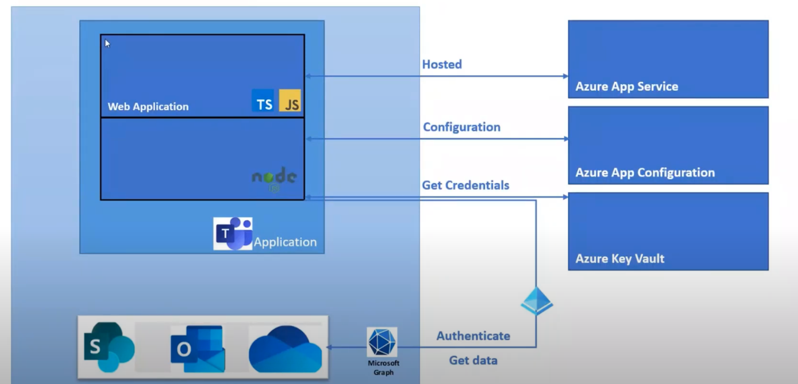

Teams¶
- An Everyday Guide to Office 365 Groups
- Microsoft Teams Platform Architecture Overview with Teams Founder, Bill Bliss
- Microsoft Teams developer documentation
Start Developing¶
Support¶
- Keyboard shortcuts for Microsoft Teams
- Microsoft Teams: How to clean cache
- A guide to troubleshooting Teams
Overview¶
- All-in-One Collaboration
- Teams and SharePoint: Better Together
- Everything You Need to Know About Microsoft Teams
- Inner Loop & Outer Loop
Planing¶
- Modern Governance für SharePoint Team Sites sind zu beachten
- Microsoft Teams planning guide
- Core components of Teams
- Limits and specifications for Microsoft Teams
- Difference in permission between an owner and a member
- Overview of Teams and SharePoint integration
Training video¶
Developing¶
- Start building apps for Teams
- Build apps for Microsoft Teams
- Overview and Concepts - Part 1
- Do you need ngrok to develop Microsoft Teams apps?


Coding¶
- A Yeoman Generator for Microsoft Teams
- Get started with Teams templates
- App Templates for Microsoft Teams
Azure App Configuration¶
- Configure Teams Applications with Azure App Configuration (nodeJS)
- teams-ext-action-azure-config
- General Microsoft 365 Developer SIG community call – 8th of July, 2021 
Personal App Properties¶
Deployment¶
- How to deploy a Yo Teams generated project to Azure through Azure DevOps
- Team development for Microsoft Teams apps
Message Extensions¶
Personal Apps¶
- Personal apps
- Building Microsoft Teams tab using SharePoint Framework - Tutorial
- Create Microsoft Teams manifest manually for a web part and deploy it to Microsoft Teams
Administration¶
- Overview of Teams
- Which Office 365 Service to Use
- Selecting users for your Microsoft Teams pilot phase
- Top 10 Office 365 Best Practices Every Admin Should Know
- Getting Started with Microsoft Teams Administration
Teams Adviser¶
Microsoft Teams versus Sharepoint Teams¶
- http://blog.intlock.com/microsoft-teams-vs-sharepoint-teams-enhance-collaboration-work
- https://www.avepoint.com/blog/microsoft-teams/office-365-groups-vs-teams/
- http://blog.pixelmill.com/3580/microsoft-teams-sharepoint-destined-lifelong-partners/
Private Channels¶
Deep Links¶
Tipps¶
- https://collab365.community/microsoft-teams-hacks
- Office 365 Groups Naming Policy
- Get Office 365 Groups with Teams via PowerShell and the Microsoft Graph
- https://laurakokkarinen.com/useful-things-to-do-with-graph-api-teams-operations
- PowerShell scripts for managing Office 365 Groups and Microsoft Teams
Querys / Reports¶
- How to find inactive Microsoft Teams you no longer need
- Get all Teams Groups
- Get Office 365 Groups with Teams via PowerShell and the Microsoft Graph
https://graph.microsoft.com/beta/groups?$filter=resourceProvisioningOptions/Any(x:x eq 'Team')
Blogs¶
Governance with teams¶
- Automate governance in Microsoft Teams: Context and Goals
- Automate governance in Microsoft Teams: The Result
- Automate governance in Microsoft Teams: Implementation, v1
- Automate governance in Microsoft Teams: Implementation, v2
Governance Tools¶
Securing Teams¶
DevOps¶
Provisioning with Template¶
- Create Teams with template
- Provisioning Teams with Azure Functions and Microsoft Flow Part 1: Solution Overview
- Microsoft Teams – Automation of Teams Creation
- Provision Microsoft Teams with Azure Automation – Part I
- Episode #73 - Provisioning Teams with the PnP Provisioning Engine
- Episode #99 - Updates about Provisioning Teams with PnP Provisioning Engine
- Episode #120 - Microsoft Teams Templates
- Provisioning teams in Microsoft Teams using the PnP Provisioning Engine
- PiaSys/Conferences-Samples/Teams-Provisioning
- Manage Team Templates with PowerShell
Renaming Teams¶
- Renaming Teams and Channels Can Be Messy
- Renaming a Microsoft Team and the associated SharePoint site